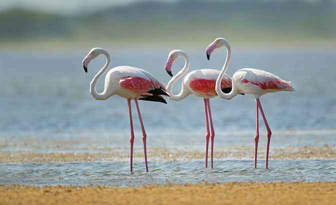
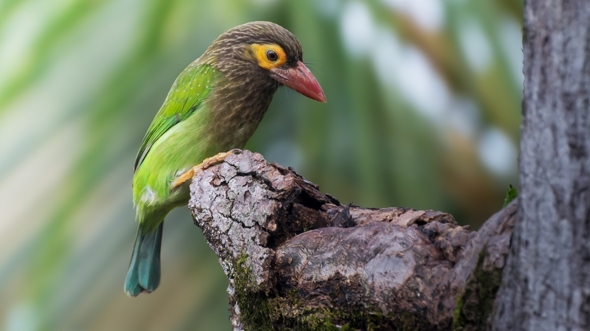
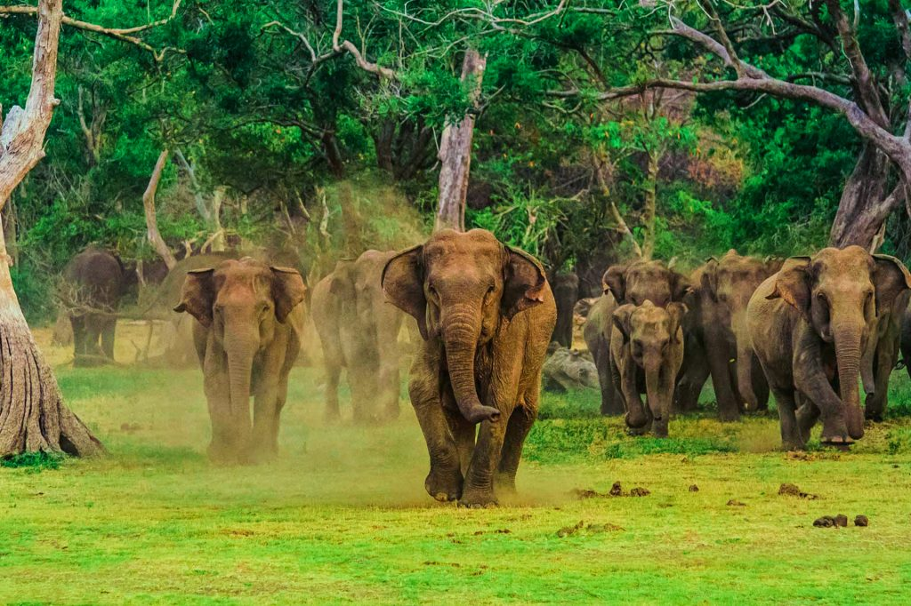
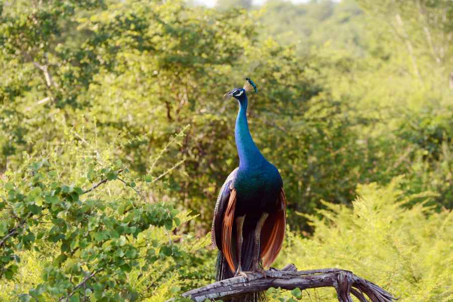
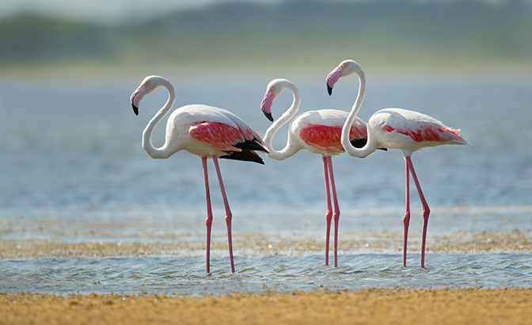
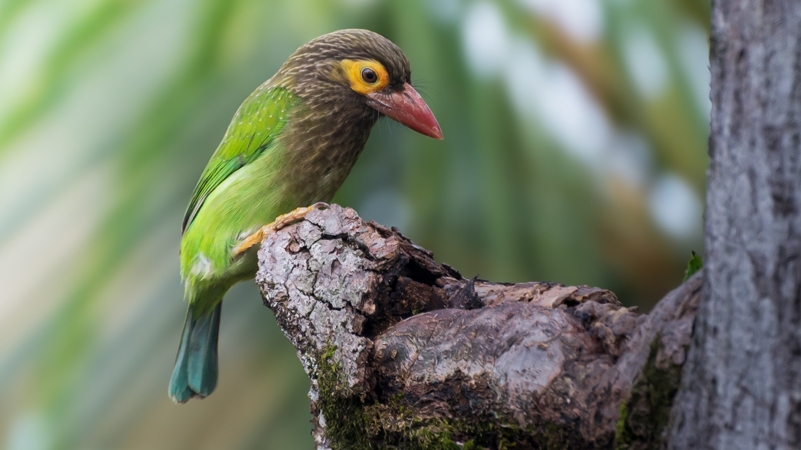
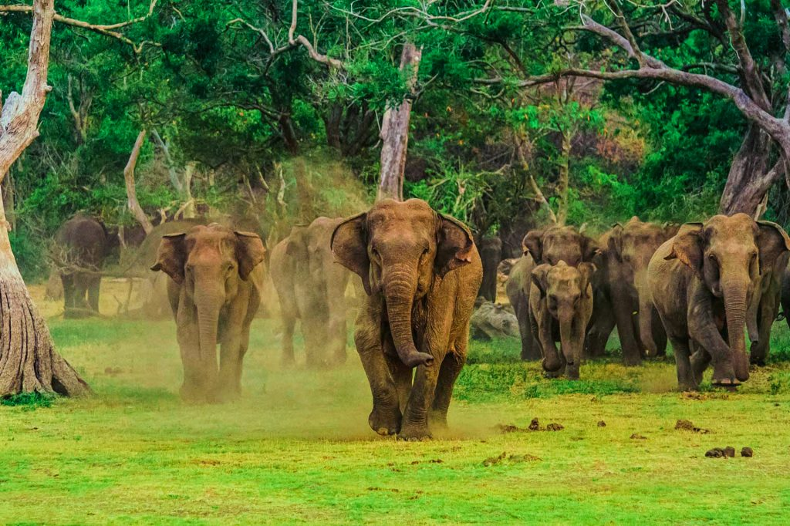
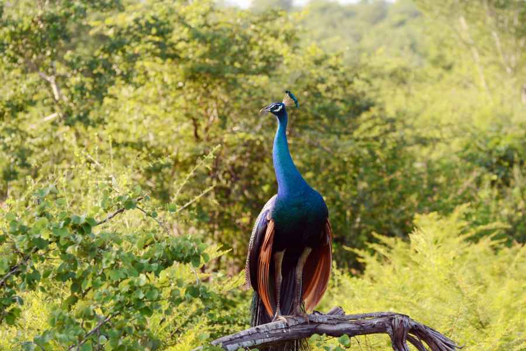

ABOUT WILPATTU NATIONAL PARK
Wilpattu National Park in Sri Lanka offers an enthralling safari experience, immersing visitors in its rich biodiversity and untamed landscapes. Sprawling across nearly 1,500 square kilometers, it is the largest national park in the country, renowned for its diverse ecosystems and numerous species of flora and fauna. The park is a haven for wildlife enthusiasts, showcasing majestic creatures like elephants, leopards, and sloth bears. A safari through Wilpattu unveils picturesque lakes, dense forests, and open grasslands, providing a captivating setting for wildlife observation and photography. The park's untamed beauty, coupled with its cultural significance, makes it a must-visit destination for nature lovers and adventure seekers alike.

Wilpattuwa, also known as Wilpattu National Park, is a dear sanctuary for diverse wildlife in Sri Lanka. This expansive park spans nearly 1,500 square kilometers, encompassing lush jungles, serene lakes, and vast grasslands. Home to a rich variety of animals, including the majestic Sri Lankan elephant, elusive leopard, and numerous bird species, Wilpattuwa stands as a testament to the country's commitment to biodiversity conservation. The park's name, derived from the term "land of lakes," highlights its scenic beauty and importance as a haven for both resident and migratory species. Visitors cherish the opportunity to witness these creatures thriving in their natural habitat.
WILPATTU ANIMAL GALLERY
 






